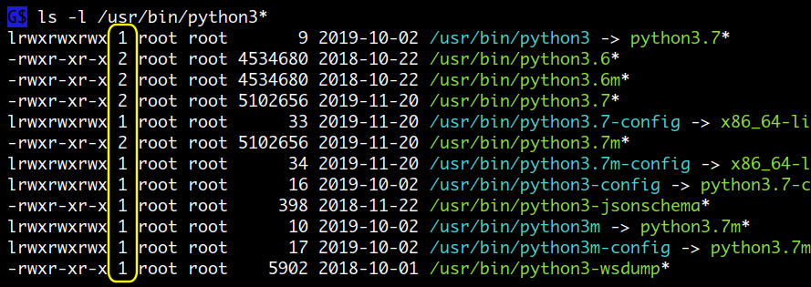
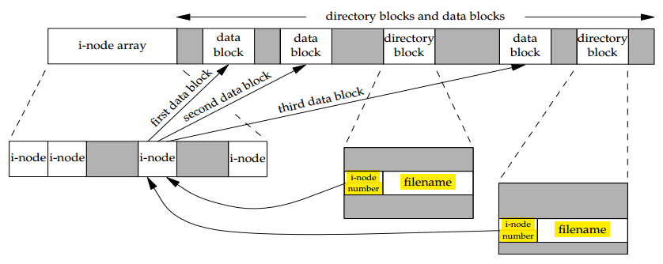

File Descriptors
프로그램이 실행 중에 사용하는 파일이나 pipe, socket, 외부 장치 같은 리소스들은 처음 사용될때 OS 에의해 리소스 번호가 할당됩니다. 이 번호는 양의 정수로 프로세스마다 가지고 있는 PCB 의 file descriptor table 에 등록되고 이후부터는 이 FD 번호를 이용해 리소스를 사용하게 됩니다. shell 에서 FD 를 생성한다는 것은 미리 파일을 open 해놓는다는 의미로 FD 를 이용하면 파일 포지션을 이용할 수 있고 pipe 나 socket 의 경우에는 읽어들일 데이터가 없어도 연결을 유지할 수 있으며 버퍼를 사용할 수 있습니다.

명칭과 관련해서는 사용자가 생성해 사용하는 FD 를 File Descriptor 라고 하고
( 위에서 왼쪽 테이블 ) 커널이 관리하는 것은 File Description 이라고 합니다
( 가운데 테이블 ). 이 둘을 구분하는 것이 중요한데
처음에 실제 리소스에 연결해서 FD 를 생성할 때는 File Descriptor 와 File Description 이
각각 생성되지만 이후에 File Descriptor 는 user space 에서 복사해서 사용할 수가 있습니다.
그리고 FD 를 close 할 때는 File Description 과 연결된 모든 File Descriptor 가
close 되어야 커널이 관리하는 File Description 이 삭제되게 됩니다.
File descriptor 의 생성, 복사, 삭제
터미널을 열면 자동으로 생성되는 FD 0, 1, 2 외에 필요하면 다른 번호의 FD 를 생성, 복사, 삭제 할수 있습니다.
- FD 를 생성하는 것은 실제 파일을 open 하는 것과 같고
- FD 를 복사하는 것은 기존에 생성한 FD 를 백업해 놓는 것과 같고
- FD 를 삭제하는 것은 파일을 close 하는 것과 같습니다.
이와같은 작업은 exec 명령으로 하며 사용 가능한 번호의 범위는 ulimit -n 입니다.
( sh 에서는 9번 까지만 사용할 수 있습니다. )
FD 를 설정할 때 사용하는 메타문자
- 입력 :
< - 출력 :
>( 이 기호를 파일로 연결하면 먼저 기존 파일 내용이 삭제됩니다 ) - append :
>>( 기존 파일 내용이 삭제되지 않고 이후부터 append 됩니다 ) - 입, 출력 :
<>( 이 기호는<+>와 같지만 기존 파일 내용이 삭제되지는 않고 출력시 첫라인 부터 overwrite 하게 됩니다. )
이 메타문자의 방향성은 실제 리소스에 연결할 때만 의미를 갖습니다. 이후에 FD 끼리 서로 복사하거나 삭제할 때는 무시할 수 있습니다 ( 방향에 상관없이 원본 FD 의 설정이 그대로 복사되기 때문에 ). FD 설정을 할때 FD 와 리소스를 위치시키는 방법은 다음과 같습니다.
새로 생성, 복사, 삭제되는 FD 는 왼쪽에, 실제 리소스, 원본 FD,
-는 오른쪽에
그러므로 FD 3 번을 생성하면서 infile 에 입력으로 연결할 경우
# 왼쪽 : 새로 생성되는 FD, 오른쪽 : 리소스
# 실제 리소스에 연결하므로 방향을 올바르게 설정해야 합니다.
$ exec 3< infile
FD 4 번을 생성하고 FD 0 번에 연결하기
# 왼쪽 : 복사되는 FD, 오른쪽 : 원본 FD
# 실제 리소스와의 설정이 아니므로 방향성을 무시할수 있습니다.
$ exec 4<&0 또는 exec 4>&0
FD 3 번을 삭제하기
# 왼쪽 : 삭제되는 FD, 오른쪽 : '-'
# 실제 리소스와의 설정이 아니므로 방향성을 무시할수 있습니다.
$ exec 3<&- 또는 exec 3>&-
FD 3 번을 만들고 outfile 파일을 출력으로 연결
출력이므로 이때 outfile 파일에 내용이 있다면 삭제됩니다. 삭제를 방지하고 append 되게 하려면
>> 을 사용합니다. > 는 데이터를 파일의 처음부터 쓰기 시작하며, >> 는 기존의 내용에 뒤이어서 쓰게 됩니다.
$ exec 3> outfile # FD 를 생성한다는 것은 미리 파일을 open 해놓는다는 의미
# write 으로 연결 하였으므로 퍼미션은 `l-wx------` 가 된다.
$ ls -l /proc/$$/fd/3
l-wx------ 1 mug896 mug896 64 04.07.2015 10:56 /proc/9363/fd/3 -> /home/mug896/outfile
$ echo 111 >&3 # FD 를 통해 이미 open 된 파일에 쓰기가 된다.
$ cat outfile
111
$ echo 222 >&3 # 파일이 open 된 상태에서 계속 쓰기가 되는것이므로
$ cat outfile # 파일 포지션이 이동하여 다음 라인에 추가가 됩니다.
111
222
$ echo 333 >&3
$ cat outfile
111
222
333
FD 가 아니고 > 를 이용해 직접 파일로 쓰기를 하면 매번 open -> write -> close 가
반복되므로 파일에 라인이 추가되지 않고 첫 번째 라인에만 쓰여지게 됩니다.
$ echo 111 > outfile
$ cat outfile
111
$ echo 222 > outfile # 쓸때마다 open -> write -> close 가 되므로
$ cat outfile # 라인이 추가되지 않고 첫 라인에만 쓰여진다.
222
$ echo 333 >> outfile # '>>' 를 사용해야 append 가 된다.
$ cat outfile
222
333
--------------------------------------
$ exec 3> outfile
$ echo 111 > /dev/fd/3 # /dev/fd/번호 를 사용하는 것도 위와 같은 결과를 같습니다.
$ cat outfile
111
$ echo 222 > /dev/fd/3
$ cat outfile
222
$ echo 333 >> /dev/fd/3 # '>>' 사용
$ cat outfile
222
333
FD 3 번을 사용후 삭제하기
# FD 를 삭제하는 것은 파일을 close 하는 것과 같다.
$ exec 3>&-
$ ls -l /proc/$$/fd/3
ls: cannot access /proc/9363/fd/3: No such file or directory
FD 4 번을 만들고 infile 파일을 입력으로 연결
$ exec 4< infile
# read 로 연결 하였으므로 퍼미션은 `lr-x------` 가 된다.
$ ls -l /proc/$$/fd/4
lr-x------ 1 mug896 mug896 64 04.07.2015 10:56 /proc/9363/fd/4 -> /home/mug896/infile
파일에서 라인을 읽어 들일때도 미리 파일을 open 해놓고 FD 를 사용하는것과
< 를 이용해 직접 파일을 읽어들이는것은 차이가 있습니다
$ cat infile
111
222
333
$ read var < infile; echo $var # 매번 open -> read -> close 되는것과 같으므로
111
$ read var < infile; echo $var # 읽을 때마다 첫 라인만 출력이 된다.
111
$ exec 4< infile # 파일을 open 해서 FD 4 번을 생성
$ read var <&4; echo $var
111
$ read var <&4; echo $var # FD 를 통해 미리 open 된 파일에서 계속 읽기가 되므로
222 # 파일 포지션이 이동한다.
$ read var <&4; echo $var
333
-------------------------------------
$ exec 4<<END
> 111
> 222
> 333
> END
$ read var < /dev/fd/4; echo $var # 매번 open -> read -> close 되는것과 같다
111
$ read var < /dev/fd/4; echo $var
111
$ read var <&4; echo $var
111
$ read var <&4; echo $var
222
$ read var <&4; echo $var
333
FD 4 번을 사용후 삭제하기
$ exec 4<&- 또는 exec 4>&-
FD 5 번을 만들고 outfile 파일을 입, 출력 으로 연결
$ cat iofile
111
$ exec 5<> iofile
# read, write 로 연결 하였으므로 퍼미션은 `lrwx------` 가 된다.
$ ls -l /proc/$$/fd/5
lrwx------ 1 mug896 mug896 64 04.07.2015 10:56 /proc/9363/fd/5 -> /home/mug896/iofile
$ cat <&5
111
$ echo 222 >&5
$ cat iofile
111
222
$ exec 5>&-
<> 로 파일을 연결하게 되면 기존의 데이터는 삭제되지 않습니다.
하지만 쓰기작업은 기존의 데이터를 overwrite 하면서 첫라인 부터 쓰게됩니다.
또한 읽기와 쓰기시에 파일 포지션 값을 공유하므로 유의해야 합니다.
$ cat iofile
111
222
333
444
555
$ exec 3<> iofile # 기존의 데이터는 삭제되지 않는다.
$ echo XXX >&3 # 파일의 첫 라인부터 overwrite 된다.
$ cat iofile
XXX
222
333
444
555
$ read var <&3; echo $var # 쓰고난후 파일 포지션이 이동하여 222 값이 출력된다.
222
$ read var <&3; echo $var
333
$ echo YYY >&3 # 읽고난후 파일 포지션이 이동하여 444 자리에 overwrite 된다.
$ cat iofile
XXX
222
333
YYY
555
<> 는 읽거나 쓰게되면 계속해서 파일 포지션이 아래로 이동합니다.
그러므로 윗부분의 데이터를 다시 읽으려면 exec 으로 다시 FD 를 연결해야 합니다
( 이때 먼저 FD 를 삭제할 필요는 없습니다 ).
하나의 파일에 두개의 FD 를 생성하면 각각 독립적으로 파일 포지션을 사용할 수 있습니다.
pipe 나 socket 의 연결을 유지할 수 있다.
Shell 에서 FD 를 pipe 나 socket 에 연결하면 읽어들일 데이터가 없어도 연결을 유지할 수 있습니다.
바로 socket 에 메시지를 보내면 연결이 유지되지 않는다.
$ echo hello > /dev/tcp/www.google.com/80
$ ls -l /proc/$$/fd
total 0
lrwx------ 1 mug896 mug896 64 08.19.2015 18:37 0 -> /dev/pts/18
lrwx------ 1 mug896 mug896 64 08.19.2015 18:37 1 -> /dev/pts/18
lrwx------ 1 mug896 mug896 64 08.19.2015 18:37 2 -> /dev/pts/18
FD 를 사용하면 socket 의 연결이 유지된다.
$ exec 3<> /dev/tcp/www.google.com/80
$ ls -l /proc/$$/fd
total 0
lrwx------ 1 mug896 mug896 64 08.19.2015 18:37 0 -> /dev/pts/18
lrwx------ 1 mug896 mug896 64 08.19.2015 18:37 1 -> /dev/pts/18
lrwx------ 1 mug896 mug896 64 08.19.2015 18:37 2 -> /dev/pts/18
lrwx------ 1 mug896 mug896 64 08.19.2015 18:37 3 -> socket:[5641570]
$ echo hello >&3
$ cat <&3
HTTP/1.0 400 Bad Request
Content-Type: text/html; charset=UTF-8
Content-Length: 1419
Date: Wed, 19 Aug 2015 09:36:39 GMT
Server: GFE/2.0
...
버퍼를 사용할 수 있다.
$ mkfifo pipe
$ echo hello > pipe # reader 가 없으므로 block 된다.
^C # Ctrl-c 종료
$ exec 3<> pipe # FD 를 생성하면 버퍼가 사용되므로 block 되지 않는다.
$ echo hello > pipe # ( 버퍼가 차기 전까지 )
$
FD 번호 대신에 변수를 사용하려면
FD 는 단순 번호로 되어 있어서 사람이 사용하기에는 어려운 단점이 있습니다. 이때는 FD 번호를 변수에 대입해서 사용하면 됩니다.
command ... >& $FD 와 같이 redirection 기호의 오른쪽에 위치한 값은
변수를 사용하는데 문제가 없지만 기호 왼쪽에 공백 없이 붙여 사용하는 FD 값은
redirection 기호와 같이 해석되므로 기본적으로 변수를 사용할 수 없습니다.
따라서 exec 으로 FD 를 생성하거나 삭제할 때 변수를 사용하려면 eval 명령을 사용하고 quote 을해야 합니다.
# 다음과 같이 하면 file.txt 이 생성됨과 동시에 먼저 stdout 이 file.txt 로 연결되고
# 이후 변수값 3 을 exec 이 실행할 명령으로 인식합니다.
$ myFD=3
$ exec $myFD> file.txt
bash: exec: 3: not found
# 따라서 다음과 같이 eval 명령과 quotes 을 함께 사용해야 합니다.
$ eval exec "$myFD>" file.txt
OK
$ eval exec "$myFD>&-"
OK
# 다음은 standard streams 를 제외하고 100 번까지 모두 삭제합니다.
$ eval exec {3..100}">&-"
Named file descriptor
Bash 에서 제공하는 기능으로 FD 번호를 생성할 때 현재 어떤 번호가 사용되고 있는지 체크할
필요 없이 자동으로 생성해서 변수에 할당해 주는 기능입니다.
생성할 때와 삭제할 때처럼 redirection 기호 왼쪽에 붙여 쓸 경우에는
변수 이름에 { } 를 사용해야 합니다.
sh에서는 사용할 수 없습니다.
$ exec {myFD}> outfile
$ echo $myFD
10
$ ls -l /proc/$$/fd/$myFD
l-wx------ 1 mug896 mug896 64 04.07.2015 10:56 /proc/9363/fd/10 -> /home/mug896/outfile
# 삭제할 때는 다음과 같이 합니다. ($myFD 를 사용하면 안됩니다.)
$ exec {myFD}>&-
$ ls -l /proc/$$/fd/$myFD
ls: cannot access /proc/9363/fd/10: No such file or directory
$ ( echo 111 >& $fd1 ) {fd1}> >( cat )
111
FD 는 child process 에게 상속된다.
shell script 가 실행되어 child process 가 생성될 때 parent 에 설정되어있는 FD 를 물려받습니다. 그러므로 parent 와 동일하게 터미널로부터 입력을 받고, 출력을 할 수 있습니다.
$ exec 3> outfile
$ ls -l /proc/$$/fd
total 0
lrwx------ 1 mug896 mug896 64 Jul 5 09:45 0 -> /dev/pts/14
lrwx------ 1 mug896 mug896 64 Jul 5 09:45 1 -> /dev/pts/14
lrwx------ 1 mug896 mug896 64 Jul 5 09:45 2 -> /dev/pts/14
l-wx------ 1 mug896 mug896 64 Jul 5 09:45 3 -> /home/mug896/outfile
$ bash -c 'ls -l /proc/$$/fd' # child process 생성
total 0
lrwx------ 1 mug896 mug896 64 Jul 5 09:45 0 -> /dev/pts/14
lrwx------ 1 mug896 mug896 64 Jul 5 09:45 1 -> /dev/pts/14
lrwx------ 1 mug896 mug896 64 Jul 5 09:45 2 -> /dev/pts/14
l-wx------ 1 mug896 mug896 64 Jul 5 09:45 3 -> /home/mug896/outfile
------------------------------------------------------------------------
$ cat test.sh
#!/bin/bash
echo hello >&3
........................
$ ./test.sh
./test.sh: line 3: 3: Bad file descriptor
$ 3>&1 ./test.sh
hello
Quiz
명령을 실행했을때 해당 프로세스가 어떤 파일을 open 해서 read, write 하고 있는지, 또는 소켓을 이용해 어떤 사이트에 접속하고 있는지 등... FD 관련 정보를 보려면 어떻게 할까요?
lsof 명령을 이용하면 프로세스가 사용중인 모든 FD 정보를 볼 수 있습니다.
$ lsof -p `pgrep some_command` # pgrep 은 some_command 의 PID 를 구하는 명령
. . .
2.
로그파일에 로그가 많이 쌓여서 디스크 공간을 확보하기 위해 파일을 rm -f 했는데
디스크 공간이 반환되지 않는 경우를 경험해 보셨을 겁니다.
어떻게 디스크 공간을 반환받을 수 있을까요?
프로그램이 실행 중에 파일을 open 하면 이후부터는 파일명이 아니라 inode 번호를 통해 관리가 됩니다. 따라서 파일로부터 입, 출력을 하는 도중에 파일을 rename 하거나 다른 디렉토리로( 같은 파티션 내의 ) 옮겨도 지속적으로 입, 출력이 되고 또한 삭제를 하더라도 디렉토리에만 보이지 않을 뿐이지 디스크는 반환되지 않고 지속적으로 쓰기를 하게 됩니다.
삭제된 파일이 차지하고 있던 디스크 공간이 반환되기 위해서는 프로그램 내에서
직접 open 한 파일을 close 하거나 프로그램이 종료돼야 합니다.
하지만 쉘에서 간단히 파일 사이즈를 0 으로 만들고 디스크 공간을 확보할 수 있는 방법이
있습니다.
# 파일 사이즈가 0 으로 truncate 되고 디스크가 반환된다.
$ > filename
다음은 실제 파일이 어떻게 삭제되는지 알아보기 위한 C 코드인데요.
mkstemp() 함수를 이용해 생성한 임시파일을 unlink() 를 이용해
삭제를 해도 디렉토리에서는 파일이 제거되지만 기존에 open 한 fd 가 남아있기 때문에
정상적으로 쓰기와 읽기가 되는 것을 볼 수 있습니다.
$ gcc -g -xc - <<\@ && ./a.out
#include <stdio.h>
#include <stdlib.h>
#include <unistd.h>
#include <fcntl.h>
int main ()
{
char tempfile[] = "temp-XXXXXX";
const char msg[] = "hello world";
char buf[sizeof msg];
puts("\n>>> CREATE tempfile");
int fd = mkstemp(tempfile); // 임시파일 생성 (fd 생성됨).
system("ls -l");
puts("\n>>> REMOVE tempfile");
unlink(tempfile); // 임시파일 삭제.
system("ls -l");
puts("\n>>> WRITE to tempfile FD");
write(fd, msg, sizeof msg); // 임시파일 fd 에 msg 를 write.
puts("\n>>> READ from tempfile FD");
lseek(fd, 0, SEEK_SET);
read(fd, buf, sizeof msg); // fd 로부터 다시 msg 를 읽어서 buf 에 저장.
puts(buf); // buf 내용 출력.
close(fd);
return 0;
}
@
>>> CREATE tempfile
total 20
-rwxrwxr-x 1 mug896 mug896 19664 Jan 27 14:29 a.out
-rw------- 1 mug896 mug896 0 Jan 27 14:29 temp-yudErj // 임시파일 생성됨
>>> REMOVE tempfile
total 20
-rwxrwxr-x 1 mug896 mug896 19664 Jan 27 14:29 a.out // 임시파일 삭제됨
>>> WRITE to tempfile FD // 디렉토리에서 파일은 삭제되었지만
// open 한 fd 가 남아있기 때문에 쓰기가 되고
>>> READ from tempfile FD // 읽기도 된다.
hello world
따라서 해당 파일과 연결된 모든 하드링크가 unlink 가 되고 open 해서 사용 중인 fd 가
모두 close 돼야 실제 파일이 파일 시스템에서 제거가 됩니다.
shell 에서 하드링크를 생성할 때는 link 명령을, 삭제할 때는 unlink 명령을 사용합니다.
$ echo "this is a test" > foo
$ ls -l
total 4
-rw-rw-r-- 1 mug896 mug896 15 2021-01-27 14:54 foo
$ link foo bar # bar 이름으로 새로운 링크 생성
$ ls -l
total 8 # -rw-rw-r-- 2
-rw-rw-r-- 2 mug896 mug896 15 2021-01-27 14:54 bar # 링크수가 2 가 된다.
-rw-rw-r-- 2 mug896 mug896 15 2021-01-27 14:54 foo
$ unlink foo # 기존 foo 파일 unlink
$ ls -l
total 4
-rw-rw-r-- 1 mug896 mug896 15 2021-01-27 14:54 bar
$ cat bar # 동일한 파일 내용이 된다.
this is a test
3.
디렉토리는 직접 ln 명령으로 하드링크를 만들 수 없는데요.
ls -ld 명령으로 디렉토리를 조회했을 때 보이는 하드링크수는 무었일까요?
해당 디렉토리가 가지고 있는 서브 디렉토리 수를 말합니다.
$ mkdir foo
$ ls -ld foo # 처음 디렉토리가 생성되면 링크수가 2 개이다 ( drwxrwxr-x 2 )
drwxrwxr-x 2 mug896 mug896 4096 2020-03-03 10:28 foo/
$ ls -al foo # 왜냐하면 ./ 와 ../ 가 포함되기 때문
total 8
drwxrwxr-x 2 mug896 mug896 4096 2020-03-03 10:28 ./
drwxrwxr-x 14 mug896 mug896 4096 2020-03-03 10:28 ../
$ mkdir foo/bar # foo 아래 새로 디렉토리를 만들면
$ ls -ld foo # 링크수가 3 개가 된다.
drwxrwxr-x 3 mug896 mug896 4096 2020-03-03 10:34 foo/
$ mkdir foo/zoo
$ ls -ld foo
drwxrwxr-x 4 mug896 mug896 4096 2020-03-03 10:35 foo/
$ mkdir foo/bar/zoo # foo/bar 아래 생성한 디렉토리는
$ ls -ld foo # 포함되지 않는다.
drwxrwxr-x 4 mug896 mug896 4096 2020-03-03 10:36 foo/
4.
/usr/bin 디렉토리의 디스크 사용량을 알아보기 위해 아래와 같은 명령을 실행해 보았는데
출력 결과가 다르게 나오는 것을 볼수가 있습니다. 왜 그럴까요?
# find 명령으로 regular file 를 검색해 사이즈를 구하고 awk 로 합계를 출력
$ find /usr/bin -type f -exec stat -c %s {} + | awk '{sum+=$1} END{ print sum}'
1296011570
$ du -b /usr/bin # du 명령은 실제 디스크 사용량을 구할때 사용
1282479351 /usr/bin
먼저 파일은 하드링크가 있을 수 있습니다. 아래 그림에서 노란색 박스로 표시된 숫자가
하드링크 인데요. python3.6 파일과 python3.6m 은 사이즈가 동일하고 링크 수가 2 인것으로
보아 동일한 파일입니다. 실제 같은 파일인지는 inode 번호를 통해 알 수 있습니다.
$ stat -c %i /usr/bin/{python3.6,python3.6m}
14680699 # inode 번호가 같으면 동일한 파일이다.
14680699
두 번째는 symbolic link 도 파일로 사이즈가 있습니다 ( 사이즈는 연결 대상 이름의 길이가 됩니다 ). 아래 그림에서 파란색으로 표시되는 파일이 symbolic link 인데 9, 33, 34, 16 ... 사이즈가 있는 것을 볼 수 있습니다.

따라서 실제 디스크 사용량을 구하기 위해서는 하드링크가 있는 파일의 경우는 하나의 파일 크기만 더해야 하고, symbolic link 파일의 크기도 더해주어야 합니다.
# stat 명령에서 %i 는 inode, %s 는 size 로 같은 inode 번호를 갖는 경우 하나만 더해준다.
$ find /usr/bin -type f -exec stat -c '%i %s' {} + | awk '!($1 in a) {a[$1]; sum+=$2} END{ print sum}'
1282350388
# -type l 로 symbolic link 파일의 합계도 구해준다. ( 한번에 모두 구하려면 -type f,l )
$ find /usr/bin -type l -exec stat -c '%i %s' {} + | awk '!($1 in a) {a[$1]; sum+=$2} END{ print sum}'
14275
$ expr 1282350388 + 14275 # 그런데 아직도 du 명령의 결과와 다르다.
1282364663
그런데 위 expr 명령의 합계를 보면 아직도 du 명령의 결과와 다른 것을 알 수 있습니다.
이것은 /usr/bin 디렉토리 사이즈가 빠져서인데요.
디렉토리도 파일 목록이 저장되는 파일로 사이즈가 있습니다.
처음에 디렉토리가 생성될 때는 블록 단위의 4096 크기로 생성되지만
파일 수가 많아지면 디렉토리 파일의 사이즈도 커지게 됩니다.
따라서 이 3 가지 정보를 모두 더해야 실제 디스크 사용량이 나오게 됩니다.
$ stat -c %s /usr/bin # 디렉토리 파일의 사이즈도 더해야한다.
114688
$ expr 1282350388 + 14275 + 114688
1282479351
$ du -b /usr/bin # 이제 du 명령의 출력 결과와 같다
1282479351 /usr/bin
위에서 사이즈를 구한 방법을 du 명령에서는 겉보기 사이즈( apparent size ) 라고 합니다.
( du 명령에 사용된 -b 옵션은 --apparent-size --block-size=1 와 같은 것입니다 ).
즉 3 bytes 크기의 파일을 계산할 때 +3 만 하는 것입니다.
하지만 이것은 정확한 디스크 사용량 계산은 아닙니다.
왜냐하면 물리 디스크가 쓰기를 할 때 사용하는 최소 단위인 섹터는 사이즈가 512 bytes 이므로
3 bytes 파일을 쓰더라도 실제 디스크는 512 bytes 를 차지하게 됩니다.
그리고 리눅스는 기본적으로 4096 블록 단위로 쓰기를 하므로
stat 명령의 %b 옵션을 이용해서 실제 사용된 블록 수를 조회해 보면
8 개로 나오게 됩니다. ( 8 * 512 = 4096 )
$ echo -n 111 > threebytes
$ ls -l threebyte
-rw-rw-r-- 1 mug896 mug896 3 2020-04-26 23:20 threebytes
$ stat -c %b threebytes # 8 개의 블록이 사용됨 (8 * 512 = 4096)
8
$ du -B1 threebytes # 실제 디스크 사용량 ('-B1' 는 --block-size=1)
4096 threebyte
$ du -b threebytes # 겉보기 사이즈 ('-b' 는 --apparent-size --block-size=1)
3 threebyte
# 디스크 섹터 사이즈 조회
$ sudo fdisk -l /dev/sda
Disk /dev/sda: 238.49 GiB, 256060514304 bytes, 500118192 sectors
Disk model: Samsung SSD 850
Units: sectors of 1 * 512 = 512 bytes
Sector size (logical/physical): 512 bytes / 512 bytes
I/O size (minimum/optimal): 512 bytes / 512 bytes
Disklabel type: dos
Disk identifier: 0xffd7a55d
따라서 실제 디스크가 사용된 크기를 계산하려면 stat 명령에서 %s 대신에 %b 를 사용하고
du 명령에서는 --apparent-size 옵션을 제거하여 블록 단위 계산을 해야 합니다.
그리고 만약에 파일 중에 100G 짜리 sparse 파일이 있을 경우 --apparent-size 옵션을 사용하면
100G 사이즈가 그대로 추가되지만 블록 단위 계산을 하게 되면 실제 사용된 블록만 추가됩니다.
# 블록 단위 계산에서 symbolic link 는 포함하지 않습니다.
$ find /usr/bin -type f -exec stat -c '%i %b' {} + | awk '!($1 in a) {a[$1]; sum+=$2} END{ print sum}'
2546360
$ stat -c %b /usr/bin # '%s' 대신에 '%b' 를 사용
232
$ bc <<< '( 2546360 + 232 ) * 512'
1303855104
$ du -B1 /usr/bin
1303855104 /usr/bin
du 명령은 기본적으로 블록 단위 계산을 하므로
du -h ...또는du -hs ...명령은 블록 단위 계산 결과가 되고du -b -h ...또는du -b -hs ...명령은 apparent size 계산 결과 가 됩니다.
# 블록 단위 계산 # apparent size 계산
$ du -B1 -s ~/.cache $ du -b -s ~/.cache
2581327872 /home/mug896/.cache 2489046940 /home/mug896/.cache
$ du -hs ~/.cache $ du -b -hs ~/.cache
2.5G /home/mug896/.cache 2.4G /home/mug896/.cache

디렉토리 엔트리는 기본적으로 파일이름 -> inode 맵핑입니다. 따라서 같은 inode 를 가리키는 여러개의 파일 이름이 있을 수 있습니다. 이것을 하드링크라고 하는데 하드링크는 같은 파일시스템( 파티션 ) 내에서만 사용이 가능하고 symbolic link 는 다른 파티션에 존재하는 파일도 연결할 수 있습니다. 파일 관련 대부분의 메타데이터는 ( 퍼미션, user id, 파일크기, 링크수, time stamp ... ) inode 에 있습니다. 사용자는 파일이름을 이용해 파일을 사용하지만 실제 커널은 inode 번호를 사용합니다.
다음은 직접 ~/.bashrc 파일의 inode 정보에서 데이터 블록 위치를 구해서 내용을 덤프하고
실제 파일과 같은지 비교해 보는것 입니다.
$ ls -i ~/.bashrc
11021118 /home/mug896/.bashrc # ~/.bashrc 파일의 inode 번호는 11021118
# debugfs 명령으로 inode 정보에서 데이터 블록 위치를 구합니다. (raw 덤프는 stat 대신 inode_dump)
$ sudo debugfs -R 'stat <11021118>' /dev/sda1 | sed -n '/EXT/,$p'
debugfs 1.45.3 (14-Jul-2019)
EXTENTS:
(0-1):48911554-48911555 # 데이터 블록은 48911554 에서 시작해서 ..554 ~ ..555 두블록
# /dev/sda1 파일 시스템의 superblock 에서 블록 사이즈를 구합니다.
$ sudo tune2fs -l /dev/sda1 | grep -i "block size"
Block size: 4096
# 블록 사이즈가 4096 이므로 실제 skip 한 바이트수는 48911554 * 4096 가된다.
$ sudo dd if=/dev/sda1 skip=48911554 bs=4096 count=2 status=none | hd
00000000 23 20 7e 2f 2e 62 61 73 68 72 63 3a 20 65 78 65 |# ~/.bashrc: exe|
00000010 63 75 74 65 64 20 62 79 20 62 61 73 68 28 31 29 |cuted by bash(1)|
00000020 20 66 6f 72 20 6e 6f 6e 2d 6c 6f 67 69 6e 20 73 | for non-login s|
00000030 68 65 6c 6c 73 2e 0a 23 20 73 65 65 20 2f 75 73 |hells..# see /us|
00000040 72 2f 73 68 61 72 65 2f 64 6f 63 2f 62 61 73 68 |r/share/doc/bash|
. . . .
. . . .
$ diff ~/.bashrc <( sudo dd if=/dev/sda1 bs=4096 skip=48911554 count=2 status=none | tr -d '\0')
$
File system of Linux : https://bit.ly/3BUzfGe
Ext4 Disk Layout : https://bit.ly/3FMgZ2D
5.
다음은 특정 디렉토리 이하 모든 디렉토리를 검색해서 regular file 의 겉보기 사이즈 합계를 구하는 것인데요. C 언어로 작성한 명령이 2 배 정도 속도가 빠른 것을 볼 수 있습니다.
$ time find /usr -type f -exec stat -c '%s' {} + | awk '{ sum += $1 } END{ print sum }'
15662068240
real 0m2.009s
user 0m0.487s
sys 0m1.641s
----------------------------------------------- C 언어
$ gcc -xc - <<\@ && time ./a.out /usr
#include <stdio.h>
#include <stdint.h>
#include <fts.h>
#include <sys/stat.h>
int main(int argc, char *argv[])
{
uintmax_t total_size = 0;
FTS *fts = fts_open(argv + 1, FTS_PHYSICAL | FTS_NOCHDIR, NULL);
FTSENT *fent;
while ((fent = fts_read(fts)) != NULL)
if (fent->fts_info == FTS_F)
total_size += fent->fts_statp->st_size;
fts_close(fts);
printf("Total size: %ju\n", total_size);
return 0;
}
@
Total size: 15662068240
real 0m0.822s
user 0m0.108s
sys 0m0.709s
----------------------------------------------- Rust 언어
$ ( cd `mktemp -d -p /dev/shm 2>&1` && trap "rm -rf '$PWD'" 0 && { cargo new dirwalk && cd dirwalk && cargo add walkdir ;} &> /dev/null && cat <<\@ > src/main.rs && cargo build --release && time target/release/dirwalk )
use walkdir::WalkDir;
fn main() {
let total_size = WalkDir::new("/usr")
.into_iter()
.filter_map(|entry| entry.ok())
.filter_map(|entry| entry.metadata().ok())
.filter(|metadata| metadata.is_file())
.fold(0, |acc, m| acc + m.len());
println!("\nTotal size: {}", total_size);
}
@
Compiling same-file v1.0.6
Compiling walkdir v2.3.2
Compiling dirwalk v0.1.0 (/dev/shm/tmp.hbz0mPHsyc/dirwalk)
Finished release [optimized] target(s) in 1.78s
Total size: 15662068240
real 0m1.026s
user 0m0.286s
sys 0m0.734s
----------------------------------------------- Perl
$ time perl -l <<\@
sub get_total_size {
my $dir = shift;
my $total = 0;
opendir my $dh, $dir or die $!;
while (my $entry = readdir $dh) {
next if $entry eq '.' || $entry eq '..';
my $fullname = "$dir/$entry";
if (not -l $fullname) {
if (-f _) { # 여기서 _ 값은 앞서 not -l 에서 가져온 stat 값을
$total += -s _; # 재사용하는 것입니다. 만약에 _ 를 $fullname 으로
} elsif (-d _) { # 변경하면 stat 값을 다시 가져오게 돼서 느려집니다.
$total += get_total_size($fullname);
}
}
}
return $total;
}
print "Total size: ", get_total_size "/usr";
@
Total size: 15662068240
real 0m1.227s
user 0m0.462s
sys 0m0.761s
----------------------------------------------- Python
$ time python3 - <<\@
import os
def getTotalSize(path):
totalSize = 0
for dent in os.scandir(path):
if dent.is_dir(follow_symlinks=False):
totalSize += getTotalSize(dent.path)
elif dent.is_file(follow_symlinks=False):
totalSize += dent.stat().st_size
return totalSize
print("Total size:", getTotalSize("/usr"))
@
Total size: 15662068240
real 0m1.465s
user 0m0.721s
sys 0m0.738s
----------------------------------------------- NodeJS
$ time node - <<\@
const fs = require("fs");
function getTotalSize(path) {
let totalSize = 0;
fs.readdirSync(path, {withFileTypes: true}).forEach(
(dent) => {
let pathName = path + "/" + dent.name;
if (dent.isDirectory())
totalSize += getTotalSize(pathName);
else if (dent.isFile())
totalSize += fs.statSync(pathName).size;
});
return totalSize;
}
console.log("Total size:", getTotalSize('/usr'));
@
Total size: 15662068240
real 0m1.585s
user 0m0.900s
sys 0m0.723s
----------------------------------------------- Dart 언어
$ ( tmp=`mktemp -p /dev/shm` && trap "rm -f $tmp" 0 && cat <<\@ > $tmp && time dart $tmp )
import 'dart:io';
void main() {
int totalSize = 0;
var dir = Directory("/usr");
dir.listSync(recursive: true, followLinks: false)
.forEach((ent) { if (ent is File) totalSize += ent.lengthSync(); });
print("Total size: $totalSize");
}
@
Total size: 15662068240
real 0m3.525s
user 0m2.753s
sys 0m1.117s
----------------------------------------------- Go 언어
# Go 언어는 goroutine 을 이용하면 멀티코어 스레드를 모두 사용하므로 속도가 제일 빠릅니다.
$ ( cd `mktemp -d -p /dev/shm 2>&1` && trap "rm -rf '$PWD'" 0 && go mod init test 2> /dev/null && cat <<\@ > main.go && go mod tidy && go build && time ./test )
package main
import (
"os"
"runtime"
"path/filepath"
"sync"
"sync/atomic"
)
func getTotalSize(dir string) int64 {
var (
totalSize int64
wg sync.WaitGroup
semaphoreChan = make(chan struct{}, runtime.GOMAXPROCS(-1) * 50)
recursiveRead func(dir string)
)
recursiveRead = func(dir string) {
semaphoreChan <- struct{}{} // "too many open files" 오류가 발생하지 않게
var curDirSize int64 // 채널 버퍼를 이용해 goroutine 동시 실행 개수를 제한.
defer func() {
atomic.AddInt64(&totalSize, curDirSize)
<-semaphoreChan
wg.Done()
}()
file, _ := os.Open(dir)
defer file.Close()
files, _ := file.Readdir(-1)
for _, file := range files {
if file.IsDir() {
wg.Add(1) // 각 디렉토리 별로 goroutine 을 할당합니다.
go recursiveRead(filepath.Join(dir, file.Name()))
} else if file.Mode().IsRegular() {
curDirSize += file.Size()
}
}
}
wg.Add(1)
go recursiveRead(dir)
wg.Wait()
return totalSize
}
func main() {
println("\nTotal size:", getTotalSize("/usr"))
}
@
Total size: 15662068240
real 0m0.349s
user 0m0.971s
sys 0m1.441s
6 .
C 프로그래밍에서는 사용 중인 FD 를 다른 프로세스로 전달하는 것도 가능합니다. 이것은 활용하기에 따라서 아주 유용한 기능이 될 수 있는데 예를 들어 서버를 운영할 때 config 정보가 변경되면 보통 서버 프로세스를 다시 실행해야 되지만 새로운 config 설정을 적용한 서버 프로세스를 먼저 실행해놓고 old 서버에서 사용 중인 socket FD 를 새 서버로 전달해 사용하게 한 다음 종료하면 일종의 "zero downtime config reloads" 도 가능합니다.
이것은 unix domain socket 과 sendmsg, recvmsg 함수를 통해 이루어지는데요. 다음은 client 프로세스가 tmp1.txt, tmp2.txt 두 개의 파일을 open 한 후에 생성된 FD 를 server 프로세스로 전달하면 server 프로세스에서 전달받은 FD 를 이용해 두 파일로 쓰기가 됩니다.
$ cat client.c
#include <stdio.h>
#include <stdlib.h>
#include <unistd.h>
#include <sys/socket.h>
#include <sys/un.h>
#include <fcntl.h>
void error_exit(char *msg) { perror(msg); exit(1); }
static void send_fd(int sockfd, int *fds, int fdn)
{
char data[1] = {0};
struct iovec iov = {
.iov_base = data,
.iov_len = sizeof(data)
};
char buf[CMSG_SPACE(fdn * sizeof(int))];
memset(buf, 0, sizeof(buf));
struct msghdr msg = {
.msg_iov = &iov,
.msg_iovlen = 1,
.msg_controllen = sizeof(buf),
.msg_control = buf,
};
struct cmsghdr *cmsg = CMSG_FIRSTHDR(&msg);
cmsg->cmsg_level = SOL_SOCKET;
cmsg->cmsg_type = SCM_RIGHTS; // FD 를 보낼때 사용하는 타입
cmsg->cmsg_len = CMSG_LEN(fdn * sizeof(int));
memcpy(CMSG_DATA(cmsg), fds, fdn * sizeof(int));
sendmsg(sockfd, &msg, 0);
}
int main()
{
int sockfd = socket(AF_UNIX, SOCK_STREAM, 0);
struct sockaddr_un addr_un = {
.sun_family = AF_LOCAL,
.sun_path = '\0', // 또는 "mysock"
};
if (connect(sockfd, (struct sockaddr *)&addr_un, sizeof(addr_un)) == -1)
error_exit("ERROR: connect()");
int fd1 = open("tmp1.txt", O_WRONLY | O_CREAT | O_APPEND, 0644);
int fd2 = open("tmp2.txt", O_WRONLY | O_CREAT | O_APPEND, 0644);
int fds[2] = { fd1, fd2 };
send_fd(sockfd, fds, 2); // open 한 두개의 FD 를 서버로 전달
printf("send_fd >>> fd1: %d, fd2: %d ... done.\n", fd1, fd2);
}
$ cat server.c
#include <stdio.h>
#include <stdlib.h>
#include <unistd.h>
#include <sys/socket.h>
#include <sys/un.h>
void error_exit(char *msg) { perror(msg); exit(1); }
static int *receive_fd(int sockfd, int fdn)
{
char data[1];
struct iovec iov = {
.iov_base = data,
.iov_len = sizeof(data)
};
char buf[CMSG_SPACE(fdn * sizeof(int))];
memset(buf, 0, sizeof(buf));
struct msghdr msg = {
.msg_control = buf,
.msg_controllen = sizeof(buf),
.msg_iov = &iov,
.msg_iovlen = 1,
};
recvmsg(sockfd, &msg, 0);
struct cmsghdr *cmsg = CMSG_FIRSTHDR(&msg);
int *fds = malloc(fdn * sizeof(int));
memcpy(fds, CMSG_DATA(cmsg), fdn * sizeof(int));
return fds;
}
int main()
{
int sockfd = socket(AF_UNIX, SOCK_STREAM, 0);
struct sockaddr_un addr_un = {
.sun_family = AF_UNIX,
.sun_path = '\0', // 또는 "mysock"
};
if (bind(sockfd, (struct sockaddr *)&addr_un, sizeof(addr_un)) == -1)
error_exit("ERROR: bind()");
listen(sockfd, 10);
int conn_sock = accept(sockfd, NULL, NULL);
int *rfd = receive_fd(conn_sock, 2);
printf("receive_fd >>> fd1: %d, fd2: %d ... done.\n", rfd[0], rfd[1]);
write(rfd[0], "hello", 5);
write(rfd[1], "world", 5); // client 로부터 전달받은 FD 를 이용해 쓰기를 한다.
puts("write done.");
}
$ gcc client.c -o client
$ gcc server.c -o server
##### terminal 1 #####
$ ./client # 먼저 server 를 실행합니다.
send_fd >>> fd1: 4, fd2: 5 ... done.
##### terminal 2 #####
$ ./server # client 에서 전달한 FD 4, 5 번은
receive_fd >>> fd1: 5, fd2: 6 ... done. # server 에서 FD 5, 6 번에 할당된다.
write done.
$ more tmp1.txt # client 에서 open 한 파일에 정상적으로 쓰기가 된다.
hello
$ more tmp2.txt
world